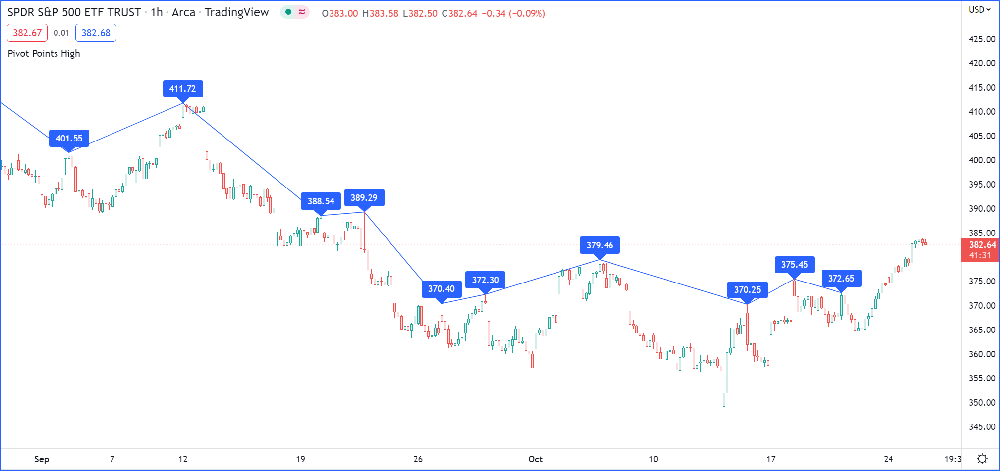

{kind=link}
Objects¶
Note
This page contains advanced material. If you are a beginning Pine Script® programmer, we recommend you become familiar with other, more accessible Pine Script® features before you venture here.
Introduction¶
Pine Script® objects are instances of user-defined types (UDTs). They are the equivalent of variables containing parts called fields, each able to hold independent values that can be of various types.
Experienced programmers can think of UDTs as methodless classes. They allow users to create custom types that organize different values under one logical entity.
Creating objects¶
Before an object can be created, its type must be defined. The User-defined types section of the Type system page explains how to do so.
Let’s define a pivotPoint type to hold pivot information:
type pivotPoint
int x
float y
string xloc = xloc.bar_time
Note that:
- We use the type keyword to declare the creation of a UDT.
- We name our new UDT
pivotPoint. - After the first line, we create a local block containing the type and name of each field.
- The
xfield will hold the x-coordinate of the pivot. It is declared as an “int” because it will hold either a timestamp or a bar index of “int” type. yis a “float” because it will hold the pivot’s price.xlocis a field that will specify the units ofx: xloc.bar_index or xloc.bar_time. We set its default value to xloc.bar_time by using the=operator. When an object is created from that UDT, itsxlocfield will thus be set to that value.
Now that our pivotPoint UDT is defined, we can proceed to create objects from it.
We create objects using the UDT’s new() built-in method.
To create a new foundPoint object from our pivotPoint UDT, we use:
foundPoint = pivotPoint.new()
We can also specify field values for the created object using the following:
foundPoint = pivotPoint.new(time, high)
Or the equivalent:
foundPoint = pivotPoint.new(x = time, y = high)
At this point, the foundPoint object’s x field will contain the value of the
time built-in when it is created,
y will contain the value of high
and the xloc field will contain its default value of
xloc.bar_time
because no value was defined for it when creating the object.
Object placeholders can also be created by declaring na object names using the following:
pivotPoint foundPoint = na
This example displays a label where high pivots are detected.
The pivots are detected legsInput bars after they occur, so we must plot the label in the past for it to appear on the pivot:
//@version=5
indicator("Pivot labels", overlay = true)
int legsInput = input(10)
// Define the `pivotPoint` UDT.
type pivotPoint
int x
float y
string xloc = xloc.bar_time
// Detect high pivots.
pivotHighPrice = ta.pivothigh(legsInput, legsInput)
if not na(pivotHighPrice)
// A new high pivot was found; display a label where it occurred `legsInput` bars back.
foundPoint = pivotPoint.new(time[legsInput], pivotHighPrice)
label.new(
foundPoint.x,
foundPoint.y,
str.tostring(foundPoint.y, format.mintick),
foundPoint.xloc,
textcolor = color.white)
Take note of this line from the above example:
foundPoint = pivotPoint.new(time[legsInput], pivotHighPrice)
This could also be written using the following:
pivotPoint foundPoint = na
foundPoint := pivotPoint.new(time[legsInput], pivotHighPrice)
When an object is created using var or varip, those keywords apply to all of the object’s fields:
//@version=5
indicator("")
type barInfo
int i = bar_index
int t = time
float c = close
// Created on bar zero.
var firstBar = barInfo.new()
// Created on every bar.
currentBar = barInfo.new()
plot(firstBar.i)
plot(currentBar.i)
Changing field values¶
The value of an object’s fields can be changed using the := reassignment operator.
This line of our previous example:
foundPoint = pivotPoint.new(time[legsInput], pivotHighPrice)
Could be written using the following:
foundPoint = pivotPoint.new()
foundPoint.x := time[legsInput]
foundPoint.y := pivotHighPrice
Collecting objects¶
Pine Script® collections (arrays, matrices, and maps) can contain objects, allowing users to add virtual dimensions to their data structures. To declare a collection of objects, pass a UDT name into its type template.
This example declares an empty array that will hold
objects of a pivotPoint user-defined type:
pivotHighArray = array.new<pivotPoint>()
To explicitly declare the type of a variable as an array, matrix, or map of a user-defined type, use the collection’s type keyword followed by its type template. For example:
var array<pivotPoint> pivotHighArray = na
pivotHighArray := array.new<pivotPoint>()
Let’s use what we have learned to create a script that detects high pivot points. The script first collects historical pivot information in an array. It then loops through the array on the last historical bar, creating a label for each pivot and connecting the pivots with lines:
//@version=5
indicator("Pivot Points High", overlay = true)
int legsInput = input(10)
// Define the `pivotPoint` UDT containing the time and price of pivots.
type pivotPoint
int openTime
float level
// Create an empty `pivotPoint` array.
var pivotHighArray = array.new<pivotPoint>()
// Detect new pivots (`na` is returned when no pivot is found).
pivotHighPrice = ta.pivothigh(legsInput, legsInput)
// Add a new `pivotPoint` object to the end of the array for each detected pivot.
if not na(pivotHighPrice)
// A new pivot is found; create a new object of `pivotPoint` type, setting its `openTime` and `level` fields.
newPivot = pivotPoint.new(time[legsInput], pivotHighPrice)
// Add the new pivot object to the array.
array.push(pivotHighArray, newPivot)
// On the last historical bar, draw pivot labels and connecting lines.
if barstate.islastconfirmedhistory
var pivotPoint previousPoint = na
for eachPivot in pivotHighArray
// Display a label at the pivot point.
label.new(eachPivot.openTime, eachPivot.level, str.tostring(eachPivot.level, format.mintick), xloc.bar_time, textcolor = color.white)
// Create a line between pivots.
if not na(previousPoint)
// Only create a line starting at the loop's second iteration because lines connect two pivots.
line.new(previousPoint.openTime, previousPoint.level, eachPivot.openTime, eachPivot.level, xloc = xloc.bar_time)
// Save the pivot for use in the next iteration.
previousPoint := eachPivot
Copying objects¶
In Pine, objects are assigned by reference. When an existing object is assigned to a new variable, both point to the same object.
In the example below, we create a pivot1 object and set its x field to 1000.
Then, we declare a pivot2 variable containing the reference to the pivot1 object, so both point to the same instance.
Changing pivot2.x will thus also change pivot1.x, as both refer to the x field of the same object:
//@version=5
indicator("")
type pivotPoint
int x
float y
pivot1 = pivotPoint.new()
pivot1.x := 1000
pivot2 = pivot1
pivot2.x := 2000
// Both plot the value 2000.
plot(pivot1.x)
plot(pivot2.x)
To create a copy of an object that is independent of the original, we can use the built-in copy() method in this case.
In this example, we declare the pivot2 variable referring to a copied instance of the pivot1 object.
Now, changing pivot2.x will not change pivot1.x, as it refers to the x field of a separate object:
//@version=5
indicator("")
type pivotPoint
int x
float y
pivot1 = pivotPoint.new()
pivot1.x := 1000
pivot2 = pivotPoint.copy(pivot1)
pivot2.x := 2000
// Plots 1000 and 2000.
plot(pivot1.x)
plot(pivot2.x)
It’s important to note that the built-in copy() method produces a shallow copy of an object.
If an object has fields with special types
(array,
matrix,
map,
line,
linefill,
label,
box, or
table),
those fields in a shallow copy of the object will point to the same instances as the original.
In the following example, we have defined an InfoLabel type with a label as one of its fields.
The script instantiates a shallow copy of the parent object, then calls a user-defined
set() method to update the info and lbl fields of each object.
Since the lbl field of both objects points to the same label instance,
changes to this field in either object affect the other:
//@version=5
indicator("Shallow Copy")
type InfoLabel
string info
label lbl
method set(InfoLabel this, int x = na, int y = na, string info = na) =>
if not na(x)
this.lbl.set_x(x)
if not na(y)
this.lbl.set_y(y)
if not na(info)
this.info := info
this.lbl.set_text(this.info)
var parent = InfoLabel.new("", label.new(0, 0))
var shallow = parent.copy()
parent.set(bar_index, 0, "Parent")
shallow.set(bar_index, 1, "Shallow Copy")
To produce a deep copy of an object with all of its special type fields pointing to independent instances, we must explicitly copy those fields as well.
In this example, we have defined a deepCopy() method that instantiates a new InfoLabel object with
its lbl field pointing to a copy of the original’s field. Changes to the deep copy’s lbl
field will not affect the parent object, as it points to a separate instance:
//@version=5
indicator("Deep Copy")
type InfoLabel
string info
label lbl
method set(InfoLabel this, int x = na, int y = na, string info = na) =>
if not na(x)
this.lbl.set_x(x)
if not na(y)
this.lbl.set_y(y)
if not na(info)
this.info := info
this.lbl.set_text(this.info)
method deepCopy(InfoLabel this) =>
InfoLabel.new(this.info, this.lbl.copy())
var parent = InfoLabel.new("", label.new(0, 0))
var deep = parent.deepCopy()
parent.set(bar_index, 0, "Parent")
deep.set(bar_index, 1, "Deep Copy")
Shadowing¶
To avoid potential conflicts in the eventuality where namespaces added to Pine Script® in the future would collide with UDTs or object names in existing scripts; as a rule, UDTs and object names shadow the language’s namespaces. For example, a UDT or object can use the name of built-in types, such as line or table.
Only the language’s five primitive types cannot be used to name UDTs or objects: int, float, string, bool, and color.